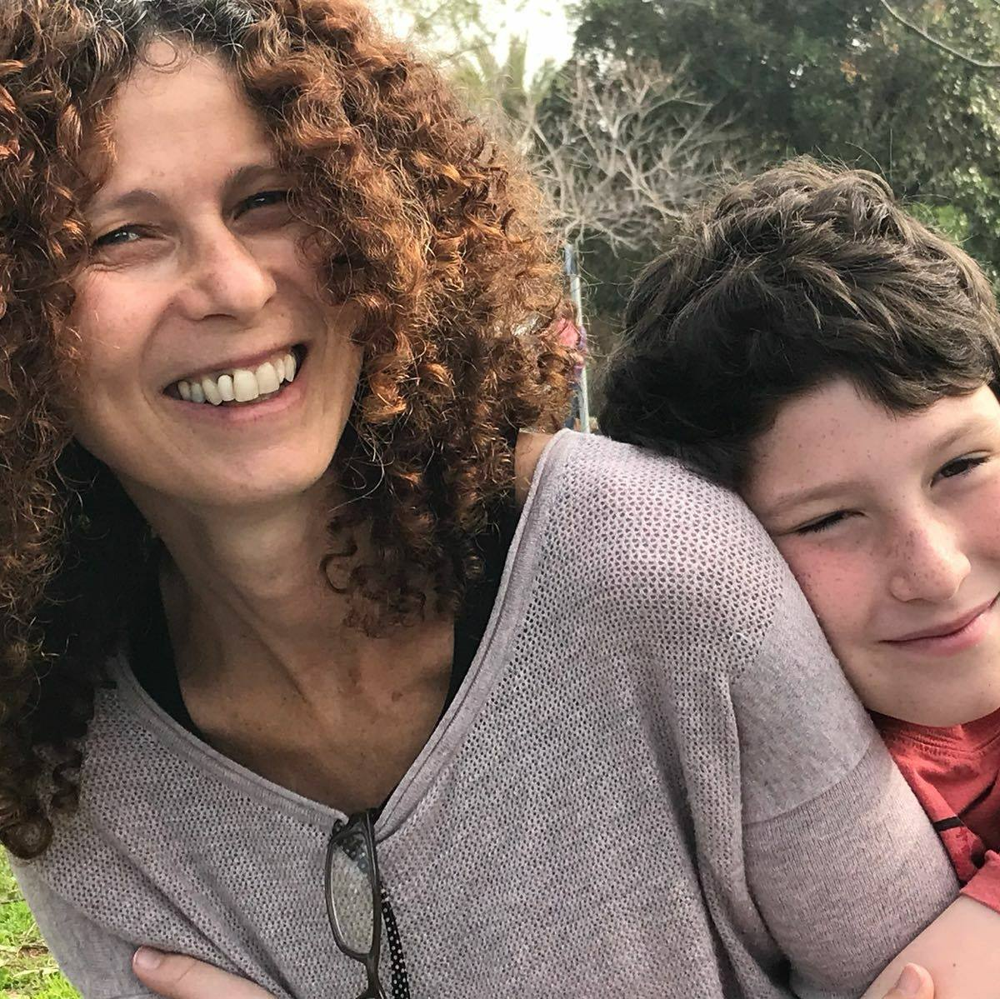

|  |
Yochi BardugoVP opertation in Barry Katz Ltd |
A multidisciplinary manager with over 15 years in tech-led operations and customer service for a global company that designs and delivers training programs for some of the world's leading brands. Web development experience and proficiency in CRM platforms such as Microsoft Dynamic and Salesforce. Excellent tech and organizational skills, including data analytics, coding, scripting, and integrating technologies to independently design and implement efficient processes. Detail-oriented, with a big picture state of mind. Exceptional written and spoken communication in Hebrew and English.
| C++ | ⁕⁕⁕⁕⁕ |
| Python | ⁕⁕⁕⁕⁕ |